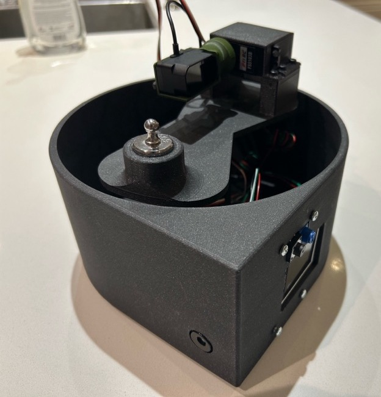
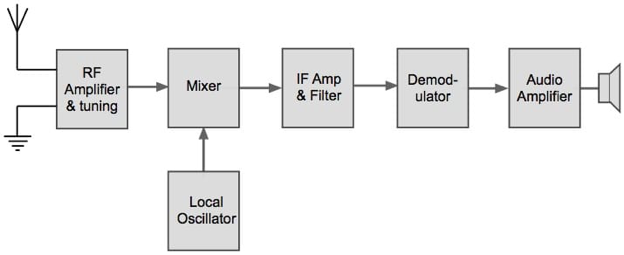

2023
Foundational electronics, breadboarding, timing circuits, digital logic, and early PCB work.
Engineering Portfolio
Embedded systems, computer architecture, RF design, PCBs, and custom hardware projects.
Featured Projects

Two-axis scanning system that converts distance readings into a colour-coded depth map.

Five-part computer architecture build combining clocking, EEPROM, ALU, control logic, and final integration.

Analog RF system built across antenna, filtering, mixing, IF, demodulation, and audio stages.

Hardware analog-to-digital converter built from clocking, DAC ladder, comparator, and SAR logic.
Progression
Foundational electronics, breadboarding, timing circuits, digital logic, and early PCB work.
Embedded systems, sensors, displays, CAD enclosures, I2C, UART, and mechanical integration.
Computer architecture, RF systems, mixed-signal circuits, assembly programming, and larger system design.
All Projects
A foundational electronics project demonstrating capacitor charge and discharge behavior with pushbutton controls and LED indicators.
2023 · Foundational Electronics
Built a 2-bit binary adder using discrete CMOS logic gates.
2023 · Digital Logic
Designed and built a multi-stage counting circuit that starts with a clock signal and ends with a seven-segment decimal display.
2023 · Digital Electronics
Built an 8-bit R/2R resistor ladder that converts binary switch inputs into an analog voltage output.
2024 · Analog / Digital Interface
Built and analyzed a 555 timer circuit, including both the standard IC implementation and a deconstructed version.
2024 · Timing Circuits
Built an 8-bit memory register using D-type flip-flops and a debounced clock input.
2024 · Sequential Logic
Built an Arduino-based binary display system where an 8-position DIP switch is read as an 8-bit number.
2024 · Embedded Systems
Designed and built a temperature display system using a TMP36 sensor, Arduino Nano, and 4-digit seven-segment display.
2024 · Embedded Sensor System
Built an I2C bus scanner using an Arduino Nano, DS1307 real-time clock, and TC74 temperature sensor.
2024 · Embedded Communication
Built a compact real-time clock prototype using an ATtiny85, DS1307 RTC, shift registers, and a 4-digit display.
2024 · Embedded Display System
Designed and built a digital scale using a load cell, NAU7802 Qwiic scale amplifier/ADC, Arduino Nano, LCD, PCB work, and a custom enclosure.
2024 · Embedded Sensor System
Created a clock using a charlieplexed LED PCB plus a stepper motor to indicate the day of the month.
2024 · Embedded Display Design
One five-part computer architecture project: clock/counter, EEPROM, ALU, architecture integration, and final build.
2025 · Computer Architecture
LiDAR, servos, Arduino, PCB, and 3D printed enclosure integrated into a scanning mapper.
2025 · Embedded Systems
Programmed a traffic light controller directly in AVR assembly.
2025 · Low-Level Embedded Programming
Successive approximation ADC with R/2R DAC and oscilloscope validation.
2025 · Mixed Signal
RF receiver signal chain from antenna to audio output.
2025 · RF Communications
Implemented the double dabble algorithm to convert binary ADC readings into binary-coded decimal.
2025 · Algorithms / Assembly
Built and analyzed a Gray code circuit using the 4517 shift register.
2025 · Digital Logic / Sequential Systems
Contact
Electrical Engineering student at McGill University interested in embedded systems, electronics, hardware design, and engineering opportunities.